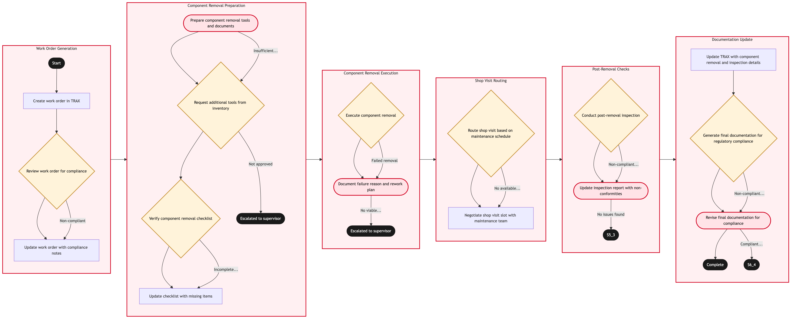

Updated 2026-08-21
Component Removal and Shop Visit Routing
Process flow
Click to zoom

Process steps
▼
Phase 1 — Work Order Generation
3 steps
| Step | Activity | Role | System | Input | Output | KPI | Dec | Exc | Pain point |
|---|---|---|---|---|---|---|---|---|---|
| 1.1 | Create work order in TRAX | Maintenance Planner | TRAXB | Maintenance request details | Work order number | Time to create work order < 2 hours | N | N | Complexity in generating detailed work orders. |
| 1.2 | Review work order for compliance | Aeroplan Compliance Agent | TRAX eMobilityB | Work order number | Compliance status | First review within 30 minutes | Y | N | Manual checks can be time-consuming. |
| 1.3 | Update work order with compliance notes | Aeroplan Compliance Agent | TRAX eMobilityB | Work order number, compliance issues | Updated work order | Notes added within 10 minutes | N | N | Capturing detailed notes can be error-prone. |
▼
Phase 2 — Component Removal Preparation
4 steps
| Step | Activity | Role | System | Input | Output | KPI | Dec | Exc | Pain point |
|---|---|---|---|---|---|---|---|---|---|
| 2.1 | Prepare component removal tools and documents | Heavy Maintenance Technician | TRAX eMobilityB | Work order number | Prepared tools list | Tools ready within 1 hour | N | Y | Tool availability can be inconsistent. |
| 2.2 | Request additional tools from inventory | Heavy Maintenance Technician | TRAX eMobilityB | Work order number, tool list | Updated tool status | Tools requested within 30 minutes | Y | N | Tool requests can take time to fulfill. |
| 2.3 | Verify component removal checklist | Heavy Maintenance Technician | TRAX eMobilityB | Work order number, checklist | Checklist status | Verification completed within 10 minutes | Y | N | Complex checklists can be hard to verify. |
| 2.4 | Update checklist with missing items | Heavy Maintenance Technician | TRAX eMobilityB | Work order number, missing items | Updated checklist | Updates made within 5 minutes | N | N | Tracking missing items can be challenging. |
▼
Phase 3 — Component Removal Execution
2 steps
| Step | Activity | Role | System | Input | Output | KPI | Dec | Exc | Pain point |
|---|---|---|---|---|---|---|---|---|---|
| 3.1 | Execute component removal | Heavy Maintenance Technician | TRAX eMobilityB | Work order number, checklist | Removed component | Removal completed within 2 hours | Y | N | Physical work in tight spaces can be dangerous. |
| 3.2 | Document failure reason and rework plan | Heavy Maintenance Technician | TRAX eMobilityB | Work order number, failure details | Rework plan | Plan documented within 15 minutes | N | Y | Identifying root causes can be complex. |
▼
Phase 4 — Shop Visit Routing
2 steps
| Step | Activity | Role | System | Input | Output | KPI | Dec | Exc | Pain point |
|---|---|---|---|---|---|---|---|---|---|
| 4.1 | Route shop visit based on maintenance schedule | Maintenance Planner | TRAXB | Work order number, component removal status | Shop visit route | Routing completed within 30 minutes | Y | N | Scheduling conflicts can lead to delays. |
| 4.2 | Negotiate shop visit slot with maintenance team | Maintenance Planner | TRAXB | Work order number, schedule details | Agreed shop visit slot | Negotiation completed within 1 hour | N | N | Coordination between teams can be complex. |
▼
Phase 5 — Post-Removal Checks
2 steps
| Step | Activity | Role | System | Input | Output | KPI | Dec | Exc | Pain point |
|---|---|---|---|---|---|---|---|---|---|
| 5.1 | Conduct post-removal inspection | Heavy Maintenance Technician | TRAX eMobilityB | Work order number, removed component | Inspection report | Inspection completed within 30 minutes | Y | N | Inspecting hidden areas can be difficult. |
| 5.2 | Update inspection report with non-conformities | Heavy Maintenance Technician | TRAX eMobilityB | Work order number, inspection findings | Updated inspection report | Updates made within 10 minutes | N | Y | Recording detailed findings can be error-prone. |
▼
Phase 6 — Documentation Update
3 steps
| Step | Activity | Role | System | Input | Output | KPI | Dec | Exc | Pain point |
|---|---|---|---|---|---|---|---|---|---|
| 6.1 | Update TRAX with component removal and inspection details | Maintenance Planner | TRAXB | Work order number, removal and inspection reports | Updated work order | Updates completed within 20 minutes | N | N | Ensuring all data is accurately recorded can be challenging. |
| 6.2 | Generate final documentation for regulatory compliance | Aeroplan Compliance Agent | TRAX eMobilityB | Work order number, updated work order | Final documentation | Documentation generated within 30 minutes | Y | N | Meeting regulatory standards can be complex. |
| 6.3 | Revise final documentation for compliance | Aeroplan Compliance Agent | TRAX eMobilityB | Work order number, non-conformities | Revised documentation | Revisions completed within 10 minutes | N | Y | Identifying necessary revisions can be time-consuming. |
Swim lanes
Maintenance Planner1.1 4.1 4.2 6.1
Aeroplan Compliance Agent1.2 1.3 6.2 6.3
Heavy Maintenance Technician2.1 2.2 2.3 2.4 3.1 3.2 5.1 5.2
Systems touched
TRAXBTRAX eMobilityB
Key performance indicators
- Work order creation time < 2 hours
- First review completion within 30 minutes
- Tools ready within 1 hour
- Verification completed within 10 minutes
- Removal completion within 2 hours
Risks and control points
- Inconsistent tool availability
- Complexity in verifying checklists
- Physical risks during component removal
- Scheduling conflicts leading to delays
- Difficulty in identifying root causes for failed removals
Air Canada Process Wiki — process and systems reference compiled from public sources
for IT Application Management and User Support pre-sales discovery.
Built 2026-08-21. Every system carries an evidence tier: tier C is an industry pattern and tier U is an open
question, and neither should be asserted as fact about Air Canada without confirmation in discovery.
Not affiliated with or endorsed by Air Canada. Air Canada, Aeroplan and Altitude are trademarks of Air Canada.